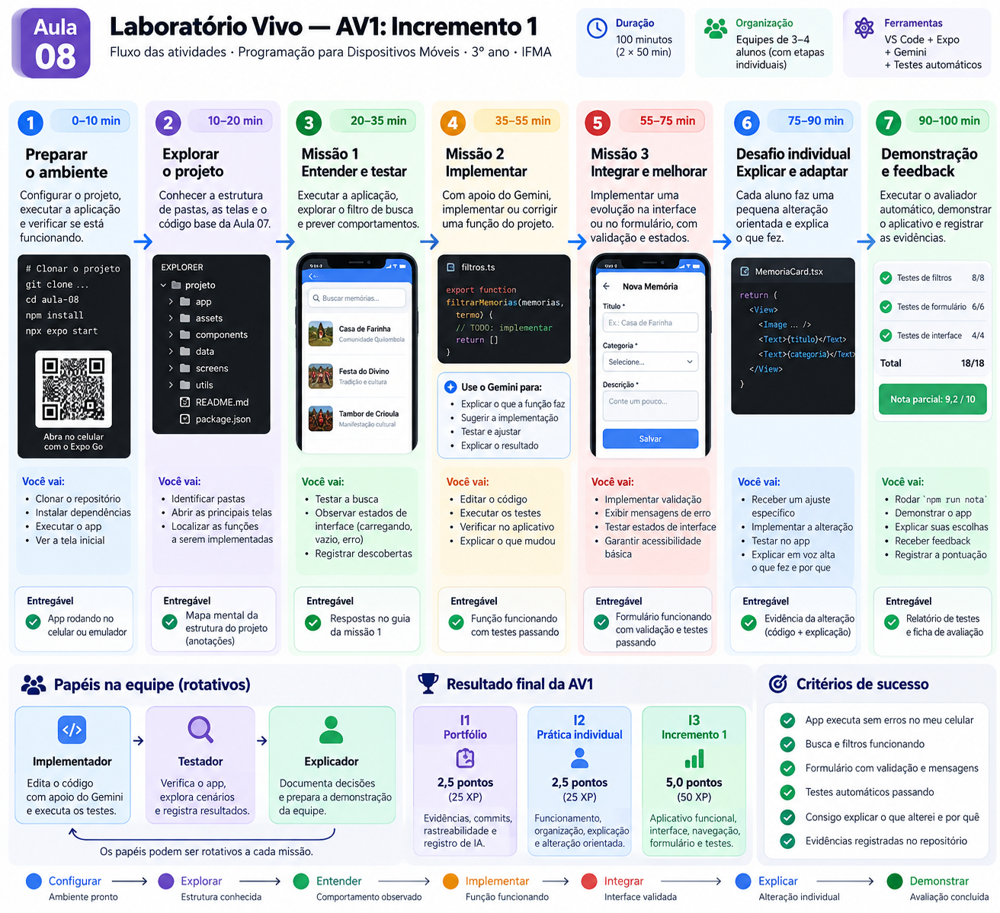

Preparar e registrar
Abra o aplicativo, conheça os arquivos e escolha seu slot. Registre como a equipe usou a IA e o que mudou no código.
Portfólio · 2,5 pontos
Concluiu quando: o projeto abre e você consegue explicar onde vai trabalhar.
Aula 08 · AV1 · Incremento 1
Vamos retomar o que é uma função, ligar as telas e testar o que acontece. Ao final, cada integrante terá seu próprio resultado e um registro do trabalho da equipe.
Já concluiu o projeto? Ir para a entrega.
Uma função recebe uma informação e devolve uma resposta. Estado é o que o aplicativo precisa lembrar. Um teste compara uma resposta com o comportamento esperado. Hoje você vai ver essas três coisas funcionando.
Você não precisa saber tudo de uma vez. O primeiro passo é abrir o laboratório no computador; depois vêm as missões e a ficha de entrega.

O portfólio (I1) vale 2,5 pontos no Marco 1. O Incremento 1 (I3) reúne o Marco 2, de 2 pontos, e o Marco 3, de 3 pontos. A prática individual (I2) vale 2,5 pontos no Marco 4. São 20 critérios de 0,5 ponto. O envio faz parte do Marco 4.
Abra o aplicativo, conheça os arquivos e escolha seu slot. Registre como a equipe usou a IA e o que mudou no código.
Portfólio · 2,5 pontos
Concluiu quando: o projeto abre e você consegue explicar onde vai trabalhar.
Corrija a prioridade de carregamento e erro. Combine busca com filtro, preserve a coleção e use o ID de cada registro.
Funções essenciais · 2 pontos
Concluiu quando: seus testes mostram o que passou e o que ainda falta.
Vá da lista ao detalhe e volte. Valide o formulário, preserve o filtro e descreva o resumo com palavras.
Integração · 3 pontos
Concluiu quando: você consegue demonstrar o percurso e repetir o teste.
Cada pessoa trabalha em seu arquivo individual. Depois, a equipe gera o pacote e importa na ficha para receber o resultado.
Prática individual · 2,5 pontos
Concluiu quando: cada integrante guarda o PDF e o recibo confirmado.
npm run nota. Você pode tentar quantas vezes precisar.npm run entrega.entrega-a08.jsonl e clique em Avaliar e enviar. O PDF é gerado automaticamente.A nota local ajuda você a aprender. A ficha pede novos casos e o servidor calcula o resultado da entrega. Se algo falhar, você poderá guardar um PDF local.
Peça uma explicação ou uma pista, depois faça a alteração no VS Code e rode os testes você mesmo. Não envie senhas, tokens, arquivos .env ou nomes de colegas.
VS Code, Node.js 22+, um navegador atualizado e acesso ao Gemini pelo navegador. O starter funciona como aplicativo web responsivo para experimentar os comportamentos de Mobile. As trilhas Expo das aulas anteriores continuam disponíveis para levar esses comportamentos ao app nativo.
O código e os testes locais funcionam sem internet depois que você obtém os arquivos. Para receber a nota oficial e o recibo, a ficha precisa de rede e o professor precisa habilitar a entrega.
Esta versão usa um aplicativo Web responsivo: os infográficos ilustram o percurso da disciplina, mas npm run web é o comando certo aqui — não é necessário instalar Expo.